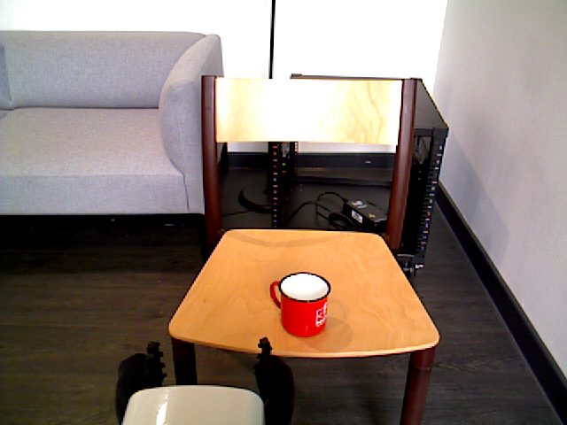

What the HSR's head camera saw on the 7 August run, before it decided anything.
The instruction never names the object
I'd like a hot drink
- Which object fits the task?The red mug
- Which part should it hold?The handle
- What else matters?It may be hot. Grip firmly.
- What went wrong?It assumed pouring and kept the rim clear. That's logged as a failure, not hidden.